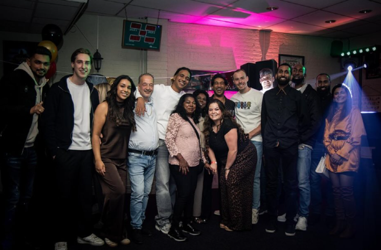
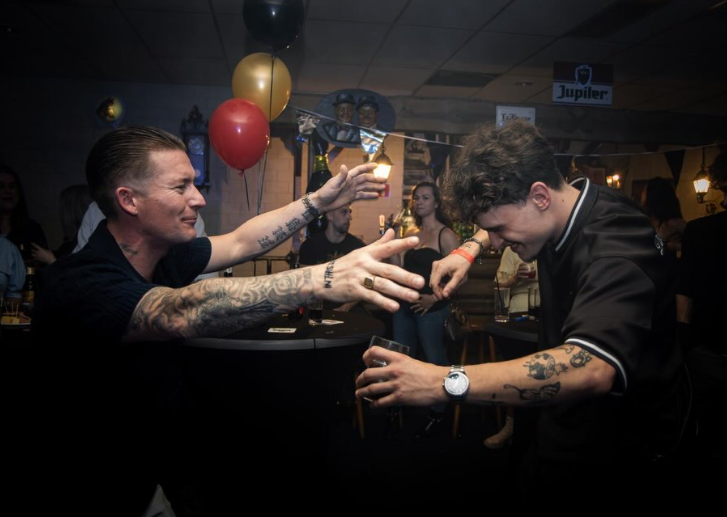
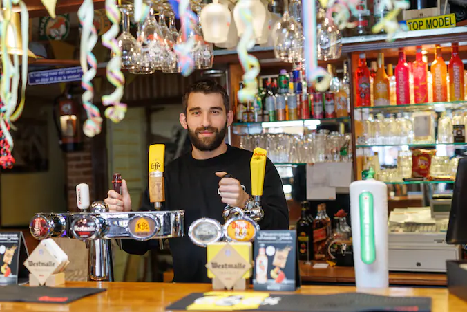
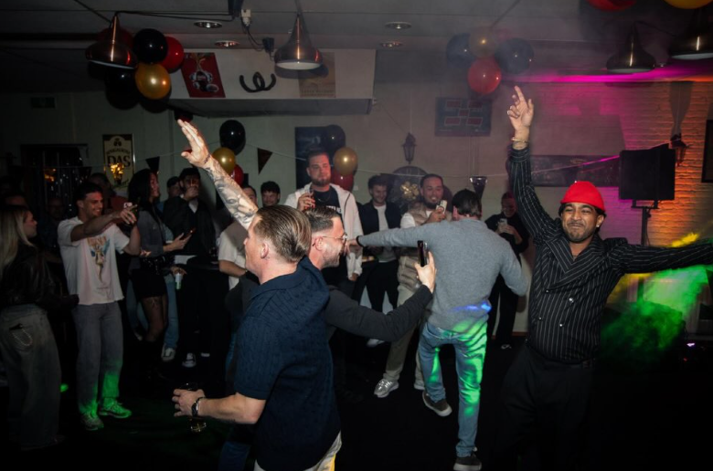
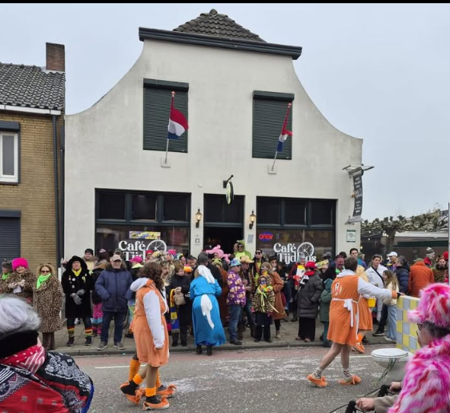
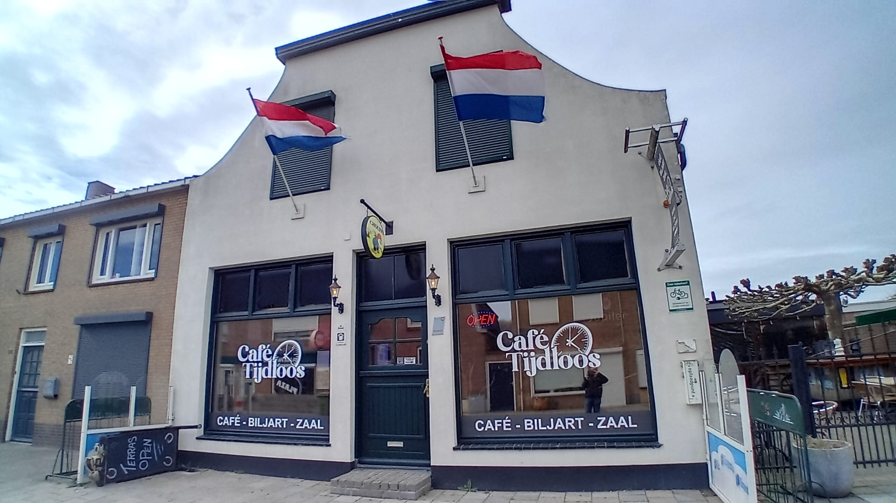

Een oud bruin café in een nieuw jasje. Donker hout, Hollandse muziek uit de speakers en een bar waar iedereen aanschuift.
Je schuift aan bij de bar, je pakt een pilsje en voor je het weet zit je in een gesprek met iemand die je nog niet kende. Aan de donker houten bar is niets veranderd. Wat er wel bij kwam: moderne popartiesten aan de muur tussen de decoratie van weleer, en de naam van het café in neonletters.
“We kunnen het hier overal over hebben, politiek en levensproblemen. Dat is het voordeel van een kroeg: we hoeven het niet op te lossen. We kunnen erom lachen en een pilsje op drinken.”Rick Suijkerbuijk, kastelein
Daar staat de naam Tijdloos voor. Twintigers die in het weekend aan de bar zitten te praten met de biljarters, en dan midden in de week binnenlopen om naar een biljartwedstrijd te komen kijken. Vriendengroepen, vaste gasten, een computerclub achterin het zaaltje. Alle leeftijden, kleuren en komaf, als ze zich maar gedragen.


“Hier noemen ze me opa. Het is hier zo leuk met de jeugd.”
Rich, stamgast links van de toog
Rick Suijkerbuijk · 22Rick Suijkerbuijk is met zijn 22 jaar de jongste kastelein van de streek. In het begin werd hij nog even uitgetest door de vaste klanten van de vorige uitbater, met grappen en grollen. Hij loste het op met humor en een proost. Nu moet hij ze op zondagavond nog netjes op tijd naar buiten bonjouren.
Hij werkt zeven dagen in de week en zou niet weten wat hij anders zou moeten doen. “De bruine kroeg dient als een sociaal en centraal punt.”
“Aan die donker houten bar iets veranderen? Ik zou het niet over mijn hart kunnen verkrijgen.”Lees het artikel in BN DeStem
Biljarten en darten horen hier bij het meubilair. De borden hangen klaar, de biljartclub speelt zijn wedstrijden en wie mee wil doen hoeft alleen maar te vragen. Kijken mag ook, dat doen er meer dan je denkt.
Jonge gasten die beloofden te komen kijken naar het biljarten, stapten midden in de week gewoon binnen.
“Dat is toch mooi.” RickBruiloften, feestjes, een dartsavond of gewoon een clubje dat een eigen hoek wil: in het zaaltje achter het café kan het. Er hangen dartborden, er is ruimte om te dansen en het staat er net zo makkelijk vol met vrienden als met een computerclub die komt gamen.

Van een rustige middag aan de bar tot carnaval op de stoep en een bruiloft in de zaal.


4731 HH Oudenbosch
Terras voor de deur, zaal achter.
Zeven dagen per week open.
Op zondagavond moeten de gasten er soms zelfs uit gebonjourd worden. De actuele tijden staan op Facebook en Instagram.
Laat weten waar het om gaat en met hoeveel mensen je komt. Rick reageert meestal binnen een dag. Voor snelle vragen mag je ook gewoon binnenlopen.